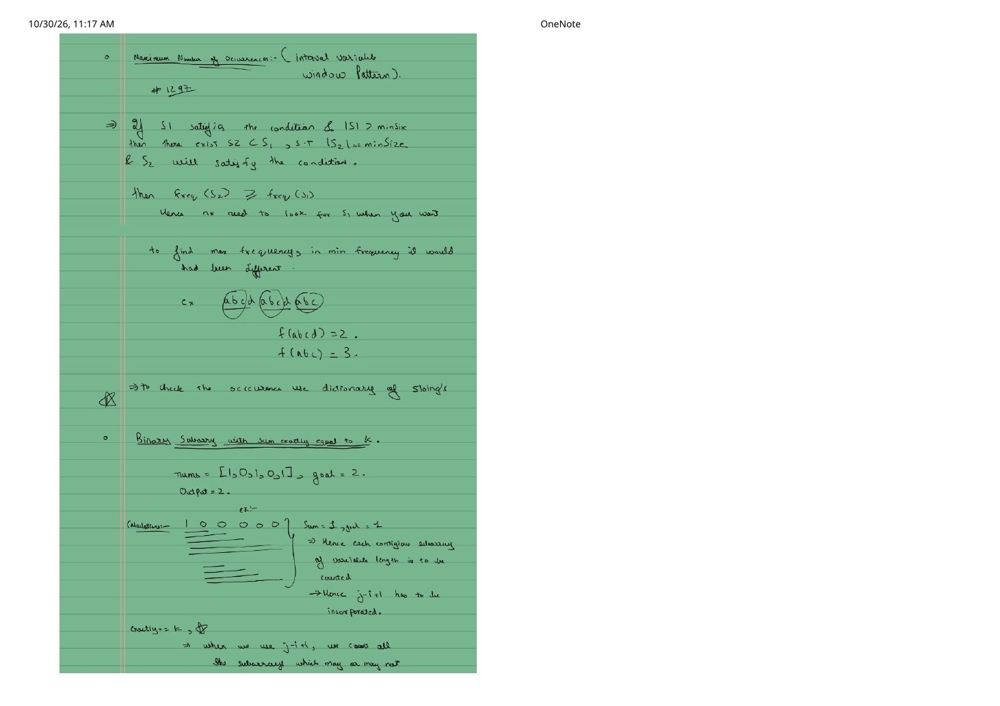
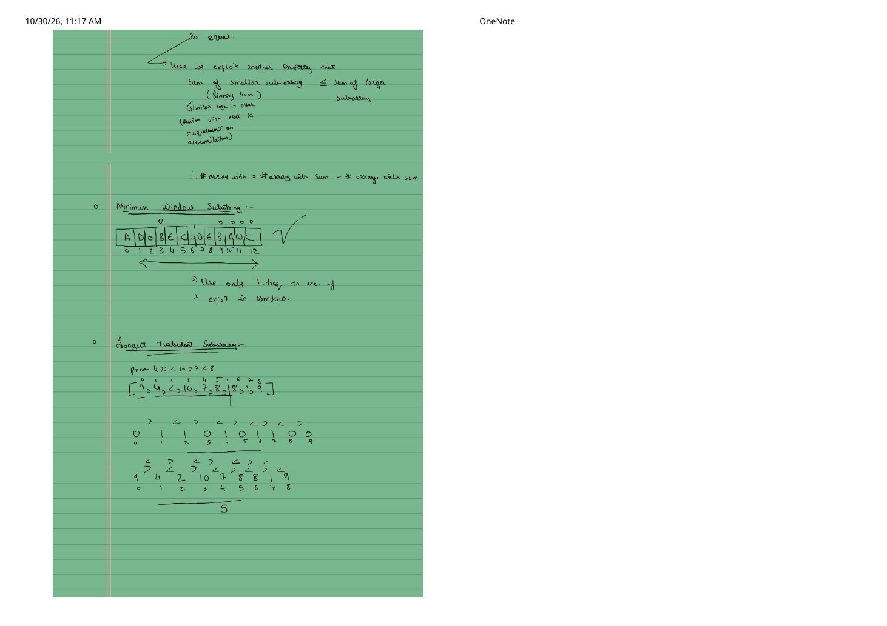
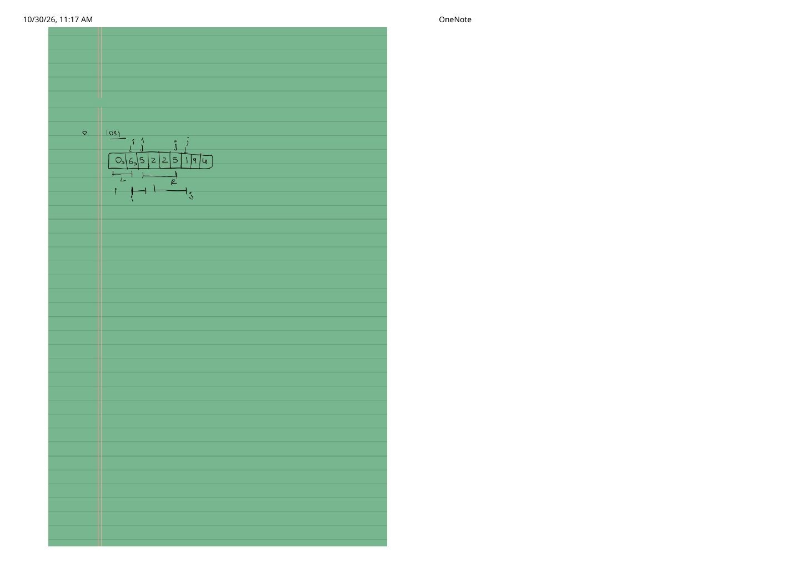
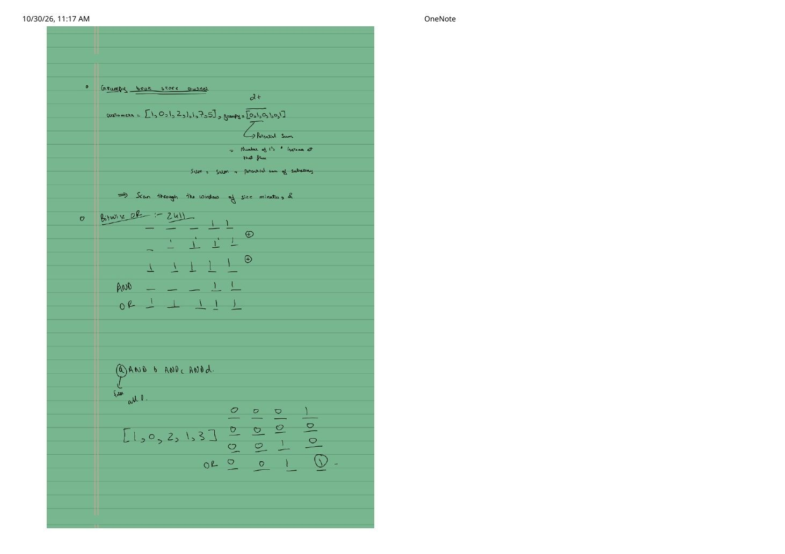
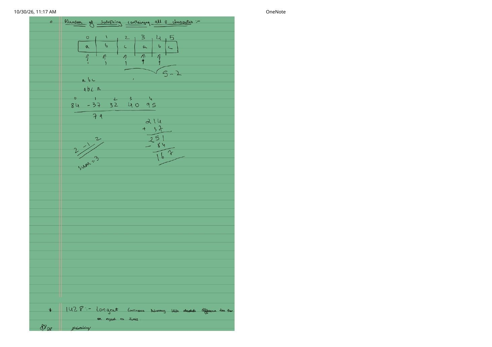
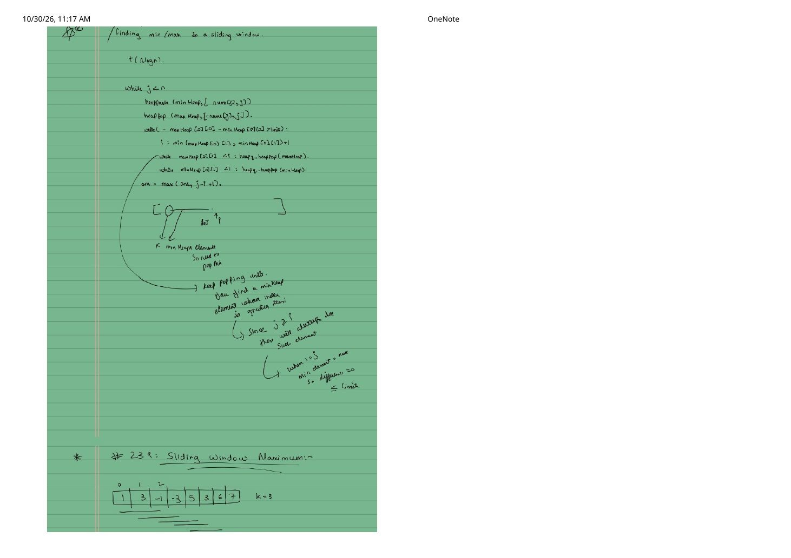
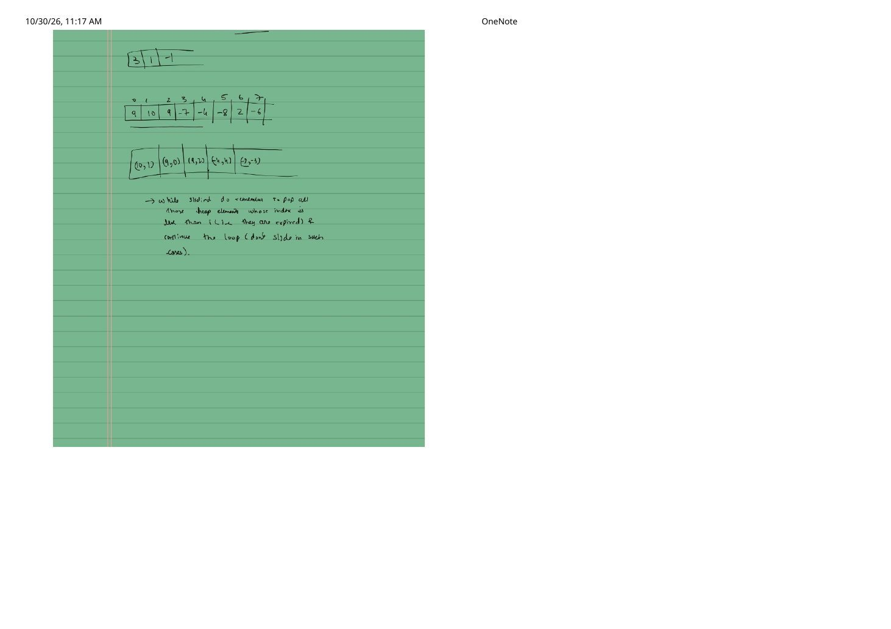

Sliding Window Problem Notes (Part 2): Exact-K Counting, Min Window, Bitwise OR & Window Extremes
Expanded from handwritten competitive coding study note: 01_Notes.pdf (Pages 11–17)
Continuing from Problem Notes (Part 1: Pages 1–10), pages 11–17 of 01_Notes.pdf tackle subtler two-pointer reductions: greedy window-size pruning, exact-$k$ counting when zeros stall a single left pointer, $O(1)$-validity minimum window substring, non-invertible bitwise OR windows, and tracking sliding-window min/max via lazy heaps and monotonic deques.
1. Greedy Interval Reduction: Maximum Occurrences of a Substring — LC 1297 (Page 11)
Given string s, maxLetters, minSize, and maxSize, return the maximum occurrences of any substring whose length lies in $[\text{minSize}, \text{maxSize}]$ and which contains at most maxLetters unique characters. At first glance, maxSize looks like it forces us to check $O(\text{maxSize} - \text{minSize} + 1)$ window lengths—until you notice the subset-frequency inequality proved on Page 11:
Why maxSize Is Completely Irrelevant!
Suppose a valid substring $S_1$ has $|S_1| > \text{minSize}$ and $\text{unique}(S_1) \le \text{maxLetters}$. Let $S_2$ be the prefix of $S_1$ of exact length $|S_2| = \text{minSize}$. Then:
- Validity is preserved: $S_2 \subset S_1 \implies \text{unique}(S_2) \le \text{unique}(S_1) \le \text{maxLetters}$.
- Frequency only increases or stays equal: Every occurrence of $S_1$ in
sautomatically contains an occurrence of $S_2$, so $\text{freq}(S_2) \ge \text{freq}(S_1)$!
For example, on "abcdabcdabc": $\text{freq}(\text{"abcd"}) = 2$, while $\text{freq}(\text{"abc"}) = 3$. (Note: as written in the margin, if the problem asked for minimum frequency instead of maximum, we could NOT ignore larger sizes!)
#include <algorithm>
#include <string>
#include <unordered_map>
int maxFreq(const std::string& s, int maxLetters, int minSize, int /*maxSize*/) {
int char_cnt[26] = {0}, unique = 0, best = 0;
std::unordered_map<std::string, int> sub_freq;
for (int i = 0, j = 0; j < static_cast<int>(s.size()); ++j) {
if (++char_cnt[s[j] - 'a'] == 1) ++unique;
if (j - i + 1 > minSize) {
if (--char_cnt[s[i++] - 'a'] == 0) --unique;
}
if (j - i + 1 == minSize && unique <= maxLetters) {
best = std::max(best, ++sub_freq[s.substr(i, minSize)]);
}
}
return best;
}2. Binary Subarrays With Sum $== \text{goal}$ — LC 930 (Pages 11–12)
Given a binary array nums (0s and 1s, e.g., [1, 0, 1, 0, 1], goal = 2 $\to 4$) and integer goal, count non-empty subarrays with sum equal to goal.
Pages 11–12 illustrate why a single two-pointer loop with j - i + 1 cannot directly count sum == goal: on [1, 0, 0, 0, 0] with goal = 1, zero elements leave the sum unchanged, whereas j - i + 1 counts all suffixes ending at $j$ (whose sums are $\le \text{goal}$, not necessarily equal to $\text{goal}$!). Because binary elements are non-negative ($\text{sum}(\text{smaller}) \le \text{sum}(\text{larger})$), we subtract two "at-most" counts in $O(n)$ time and $O(1)$ space:
#include <vector>
int numSubarraysWithSum(const std::vector<int>& nums, int goal) {
auto atMost = [&](int S) -> int {
if (S < 0) return 0; // Crucial when goal == 0 so atMost(-1) returns 0!
int sum = 0, count = 0;
for (int i = 0, j = 0; j < static_cast<int>(nums.size()); ++j) {
sum += nums[j];
while (sum > S) sum -= nums[i++];
count += (j - i + 1);
}
return count;
};
return atMost(goal) - atMost(goal - 1);
}3. Minimum Window Substring — LC 76 (Page 12)
Given strings s and t (traced on Page 12 with s = "ADOBECODEBANC", t = "ABC" $\to$ "BANC" at indices $9..12$), find the shortest substring of s containing every character of t (including multiplicity).
$O(1)$ Validity Check Using Only need[] & missing
As noted on Page 12 ("Use only t-freq to see if t exists in window"): store required counts in need[128] and set missing = t.size().
- When expanding
s[j]: ifneed[s[j]] > 0, this character satisfies an unmet requirement, so decrementmissing; then always decrementneed[s[j]](excess characters go negative!). - While
missing == 0: record[i..j]if shorter than best, then incrementneed[s[i]]; ifneed[s[i]] > 0, we just lost a required character, so incrementmissing!
#include <climits>
#include <string>
std::string minWindow(const std::string& s, const std::string& t) {
int need[128] = {0};
for (unsigned char c : t) ++need[c];
int missing = static_cast<int>(t.size());
int best_len = INT_MAX, best_start = 0;
for (int i = 0, j = 0; j < static_cast<int>(s.size()); ++j) {
if (need[static_cast<unsigned char>(s[j])]-- > 0) {
--missing;
}
while (missing == 0) {
if (j - i + 1 < best_len) {
best_len = j - i + 1;
best_start = i;
}
if (++need[static_cast<unsigned char>(s[i++])] > 0) {
++missing;
}
}
}
return best_len == INT_MAX ? "" : s.substr(best_start, best_len);
}4. Longest Turbulent Subarray (LC 978) & Two Non-Overlapping Subarrays (LC 1031) (Pages 12–13)
LC 978: Longest Turbulent Subarray (Page 12)
A subarray is turbulent if comparison signs strictly flip between < and > at every adjacent pair. On the Page 12 array [9, 4, 2, 10, 7, 8, 8, 1, 9]:
9 > 4 > 2fails alternation at4 > 2$\implies$ reset left pointer $i$ to $1$ (4).4 > 2 < 10 > 7 < 8alternates cleanly across indices $1..5$ $\implies$ length $\mathbf{5}$!8 == 8breaks turbulence completely $\implies$ jump $i$ past the tie to $j = 6$.
#include <algorithm>
#include <vector>
int maxTurbulenceSize(const std::vector<int>& arr) {
int n = static_cast<int>(arr.size());
if (n < 2) return n;
int best = 1, i = 0;
auto cmp = [](int a, int b) { return (a > b) - (a < b); }; // +1, 0, or -1
for (int j = 1; j < n; ++j) {
int c = cmp(arr[j - 1], arr[j]);
if (c == 0) {
i = j; // Equal neighbors cannot appear in any turbulent window of size >= 2
} else if (j == n - 1 || c * cmp(arr[j], arr[j + 1]) != -1) {
best = std::max(best, j - i + 1);
i = j; // Sign failed to flip at j; next turbulent run can still start at j!
}
}
return best;
}LC 1031: Maximum Sum of Two Non-Overlapping Subarrays (Page 13)
Page 13 sketches two sliding windows L and R across [0, 6, 5, 2, 2, 5, 1, 9, 4]. For a fixed order (length $L$ completely before length $M$), as the $M$-window ends at index $j$, the latest legal $L$-window ends at $j - M$. Maintaining max_L—the best $L$-window sum seen up to $j - M$—solves one ordering in a single $O(n)$ pass; running the helper for $(L, M)$ and $(M, L)$ covers both orders in $O(n)$ time and $O(1)$ space:
int maxSumTwoNoOverlap(const std::vector<int>& nums, int firstLen, int secondLen) {
auto solveOrder = [&](int L, int M) -> int {
int sumL = 0, sumM = 0;
for (int i = 0; i < L + M; ++i) {
if (i < L) sumL += nums[i];
else sumM += nums[i];
}
int bestL = sumL, ans = bestL + sumM;
for (int j = L + M; j < static_cast<int>(nums.size()); ++j) {
sumL += nums[j - M] - nums[j - M - L];
bestL = std::max(bestL, sumL);
sumM += nums[j] - nums[j - M];
ans = std::max(ans, bestL + sumM);
}
return ans;
};
return std::max(solveOrder(firstLen, secondLen), solveOrder(secondLen, firstLen));
}5. Grumpy Bookstore Owner (LC 1052) & Bitwise OR Subarrays (LC 2411) (Page 14)
LC 1052: Grumpy Bookstore Owner — Baseline + Potential Window
On Page 14 (customers = [1, 0, 1, 2, 1, 1, 7, 5], grumpy = [0, 1, 0, 1, 0, 1, 0, 1]), customers at minutes where grumpy[i] == 0 are already satisfied regardless of where the secret technique is used. The fixed window of length minutes only rescues potential dissatisfied customers grumpy[i] * customers[i]:
int maxSatisfied(const std::vector<int>& customers,
const std::vector<int>& grumpy, int minutes) {
int base_satisfied = 0, cur_rescued = 0, max_rescued = 0;
for (int j = 0; j < static_cast<int>(customers.size()); ++j) {
if (grumpy[j] == 0) {
base_satisfied += customers[j];
} else {
cur_rescued += customers[j];
}
if (j >= minutes && grumpy[j - minutes] == 1) {
cur_rescued -= customers[j - minutes];
}
max_rescued = std::max(max_rescued, cur_rescued);
}
return base_satisfied + max_rescued;
}LC 2411: Smallest Subarrays With Maximum Bitwise OR
Why is bitwise OR harder in a sliding window than addition or disjoint XOR? As sketched in the binary grid on Page 14 ([1, 0, 2, 1, 3]), OR is non-invertible: if two elements in $[i..j]$ both have bit $b = 1$, removing one does not clear bit $b$. Instead of guessing how to "un-OR", scan $i$ from $n - 1$ down to $0$ and maintain nearest[b], the smallest index $\ge i$ where bit $b$ is set! The shortest subarray starting at $i$ that achieves the maximum possible suffix OR ends at $\max_{b \text{ active}} \text{nearest}[b]$:
std::vector<int> smallestSubarrays(const std::vector<int>& nums) {
int n = static_cast<int>(nums.size());
std::vector<int> ans(n, 1);
int nearest[31];
std::fill(std::begin(nearest), std::end(nearest), -1);
for (int i = n - 1; i >= 0; --i) {
int farthest_j = i;
for (int b = 0; b < 31; ++b) {
if ((nums[i] >> b) & 1) {
nearest[b] = i; // Bit b is immediately satisfied at i itself!
} else if (nearest[b] != -1) {
farthest_j = std::max(farthest_j, nearest[b]);
}
}
ans[i] = farthest_j - i + 1;
}
return ans;
}6. Substrings With All 3 Characters (LC 1358) & Negative-Sum Note (Page 15)
At the top of Page 15, s = "abcabc" demonstrates counting valid substrings: as soon as "abc" spans $[0..2]$, indices $2, 3, 4, 5$ ($5 - 2 + 1 = 4$ right endpoints) all form valid substrings starting at $0$. Equivalently, tracking the last seen index of each of 'a', 'b', 'c' lets us count valid substrings ending at $j$ without even an inner loop: ans += 1 + min({last[0], last[1], last[2]})!
Below that trace on Page 15 is the scratch example [84, -37, 32, 40, 95] with target 167 (LC 862: Shortest Subarray with Sum at Least K): notice how -37 makes the running sum dip from $84$ down to $47$ before climbing to $47 + 32 + 40 + 95 = 214$ (and dropping index $0$'s $84$ plus $-37$ gives $214 - 47 = 167$, length $3$!). Because negative numbers destroy raw sum monotonicity, LC 862 replaces the plain left pointer $i$ with a monotonic increasing deque over prefix sums.
7. Sliding Window Min/Max: LC 1438 & LC 239 (Pages 15–17)
Pages 15–17 tackle maintaining the minimum and maximum inside a moving window—first with an intuitive $O(n \log n)$ lazy-deletion heap pattern, which we can also upgrade to $O(n)$ monotonic deques.
LC 1438 (Noted as 1428 on Page 15): Longest Subarray With Absolute Diff $\le \text{limit}$
On Page 16, two heaps—maxHeap and minHeap storing pairs (value, index)—track the window's extremes:
- Push
(nums[j], j)into both heaps. - While
maxHeap.top().first - minHeap.top().first > limit, the culprit preventing validity is whichever extreme occurs earlier, so jumpi = std::min(maxHeap.top().second, minHeap.top().second) + 1. - Lazy expiration: Pop from
maxHeapwhiletop().second < i, and pop fromminHeapwhiletop().second < i. As proved in the margin of Page 16, neither heap can ever run dry because $j \ge i$ is in both heaps, and if $i$ reaches $j$, $\text{nums}[j] - \text{nums}[j] = 0 \le \text{limit}$!
Replacing the two $O(\log n)$ heaps with two $O(1)$-amortized monotonic deques (max_dq decreasing, min_dq increasing) achieves optimal $O(n)$ time:
#include <algorithm>
#include <deque>
#include <vector>
int longestSubarray(const std::vector<int>& nums, int limit) {
std::deque<int> max_dq, min_dq; // Store indices; values decreasing / increasing
int best = 0;
for (int i = 0, j = 0; j < static_cast<int>(nums.size()); ++j) {
while (!max_dq.empty() && nums[max_dq.back()] <= nums[j]) max_dq.pop_back();
while (!min_dq.empty() && nums[min_dq.back()] >= nums[j]) min_dq.pop_back();
max_dq.push_back(j);
min_dq.push_back(j);
while (nums[max_dq.front()] - nums[min_dq.front()] > limit) {
if (max_dq.front() == i) max_dq.pop_front();
if (min_dq.front() == i) min_dq.pop_front();
++i;
}
best = std::max(best, j - i + 1);
}
return best;
}LC 239: Sliding Window Maximum (Pages 16–17)
Given nums = [1, 3, -1, -3, 5, 3, 6, 7], k = 3 (and the subtle duplicate/decreasing stress test [9, 10, 9, -7, -4, -8, 2, -6] on Page 17), return the maximum of every contiguous $k$-window.
Lazy-Heap Pitfall Highlighted on Page 17
On [9, 10, 9, -7, -4, -8, 2, -6], element (10, idx=1) stays at the top of a max-heap long after the window slides past index $1$! If you use a priority queue, you must run while (pq.top().second <= j - k) pq.pop(); before reading pq.top().first—and popping stale heap entries does not shift the window boundary itself.
In C++, a monotonic decreasing deque of indices handles both expiration (at the front) and dominance pruning (at the back) in strict $O(n)$ time:
std::vector<int> maxSlidingWindow(const std::vector<int>& nums, int k) {
std::deque<int> dq; // Indices with strictly decreasing nums[idx]
std::vector<int> ans;
ans.reserve(nums.size() - k + 1);
for (int j = 0; j < static_cast<int>(nums.size()); ++j) {
// 1. Evict index that fell off the left edge (idx == j - k)
if (!dq.empty() && dq.front() <= j - k) {
dq.pop_front();
}
// 2. Any older element <= nums[j] can NEVER be a future maximum
while (!dq.empty() && nums[dq.back()] <= nums[j]) {
dq.pop_back();
}
dq.push_back(j);
if (j >= k - 1) {
ans.push_back(nums[dq.front()]);
}
}
return ans;
}From the Handwritten Notes
Expand the original handwritten pages (Pages 11–17 of 01_Notes.pdf) below to inspect the exact derivations, dry runs, and annotations:
View original note — Page 11: LC 1297 Max Occurrences Proof & LC 930 Binary Subarrays With Sum


01_Notes.pdf: proving $\text{freq}(S_2) \ge \text{freq}(S_1)$ for $|S_2| = \text{minSize}$ and exploring zero-padded binary subarrays.View original note — Page 12: Exact-K Difference Formula, LC 76 Min Window Substring & LC 978 Turbulent Subarray


01_Notes.pdf: atMost(k) - atMost(k - 1), "ADOBECODEBANC" trace, and turbulent sign alternation.View original note — Page 13: LC 1031 Two Non-Overlapping Subarrays L & R Window Sketch


01_Notes.pdf: sliding paired L and R windows across [0, 6, 5, 2, 2, 5, 1, 9, 4].View original note — Page 14: LC 1052 Grumpy Bookstore Owner & LC 2411 Bitwise OR Subarrays


01_Notes.pdf: potential rescued customer sum and contrasting bitwise AND vs. bitwise OR across window elements.View original note — Page 15: LC 1358 Substrings With All 3 Chars, Negative-Sum Scratchpad & LC 1438 Intro


01_Notes.pdf: "abcabc" substring extensions, [84, -37, 32, 40, 95] sum trace, and LC 1438 setup.View original note — Page 16: Two-Heap Lazy Deletion for LC 1438 & Intro to LC 239 Sliding Window Maximum


01_Notes.pdf: $O(n \log n)$ minHeap/maxHeap index-expiration logic and LC 239 window setup.View original note — Page 17: LC 239 Expired Heap Top Trace ([9, 10, 9, -7, -4, -8, 2, -6])


01_Notes.pdf: popping stale heap elements whose index is $< i$ without advancing the window boundary.